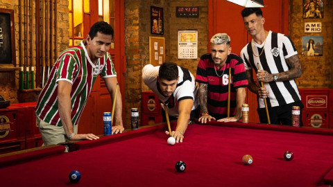

Em que ano os maiores do Rio de janeiro foram criados?

Flamengo, Vasco, Fluminense e Botafogo dominam o futebol carioca há anos, mas afinal, em que ano esses times foram criados?
Clique no menu e descubra!
Flamengo, Vasco, Fluminense e Botafogo dominam o futebol carioca há anos, mas afinal, em que ano esses times foram criados?
Clique no menu e descubra!